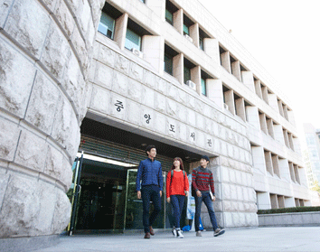

도서관 소개INTRODUCTION

1982년 개관한 중앙도서관은 1988년 확대,개편하면서 1994년 10월
현재의 건물 (지하1층,지상4층 연면적 10,500㎡)로 이전하였습니다.
가천대학교 중앙도서관은 2012년 통합을 계기로 글로벌캠퍼스와 메디컬
캠퍼스에서 각각의 도서관을 운영중에 있습니다.
1995년 12월에 도서관전산화시스템(Vintage_LAS)을 도입하여
도서관자동화의 기반을 구축하였고,1998년 4월 전자정보관을 개관하여
다양한 형태의 서비스를 제공하기 시작하였습니다. 전자정보관은
이용자의 큰 호응에 힘입어 2003년 인터넷 카페로 새롭게 변신하였고,
이는 2010년 8월에 개관한 전자정보도서관의 초석이 되었습니다.
비전타워에 위치한 전자정보도서관은 전자정보실, 스터디룸 및
일반열람실로 구성되어 있으며, 21세기 정보화 시대에 부응할 수 있도록
첨단 학술정보제공 기관으로서의 위상을 확립하고 있습니다.
중앙도서관은 현재 약110만권의 장서를 비롯하여 전자저널, 오디오북,
e-book 등 다양한 형태의 전자자료와 각종 멀티미디어장비를 구축하여
최첨단 전자도서관시스템을 갖추고 있으며, 교육과 연구에 필요한 각종
정보를 효과적으로 지원함으로서 대학 경쟁력 강화에 일익을 하고
있습니다. 중앙도서관은 다양한 학술 정보를 보다 신속하게 제공하기
위해 타 대학 도서관 및 연구기관과의 상호 협력 체제를 확대하고
있으며, 앞으로 학술정보센터와 복합문화공간으로서의 기능을 견실하게
수행하여 나갈 것입니다.